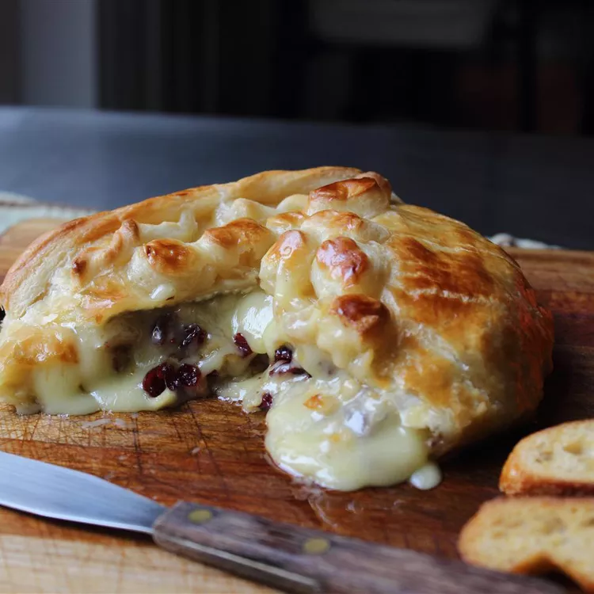

Baked Stuffed Brie with Cranberries & Walnuts

Description
One of the most common mistakes people make when serving cheese is not letting it come to room temperature
first, so that all the flavors can be fully realized. This beautiful baked stuffed brie takes that principle to the next level.
Ingredients
- 1 small wheel of brie (about 6 to 8 inches), chilled
- ¼ cup dried cranberries
- ¼ cup chopped walnuts
- 1 sheet frozen puff pastry, thawed, plus extra for (optional) design
- 1 egg, beaten with
- 1 teaspoon water
Steps
- Score the side of a wheel of brie all the way around with a sharp paring knife. Cut directly on the "equator" through
the rind. Using a long piece of string or dental floss, wrap the string around the brie on the newly made cut. Loop
one end of the string over the other (a half knot). Then pulling the ends of the string in opposite directions, cut the
brie in half.
- Press the dried cranberries on one cut side of the brie, and the walnuts on the other. Quickly put the 2 sides back
together with the cranberries on top of the walnuts. Press together and stuff back in any cranberries or walnuts
that fell out.
- Roll out a thawed sheet of puff pastry on a floured surface to about 1/8-inch thickness. Place brie in center of pastry.
Gently pull up edges to ensure you have enough dough to entirely wrap the brie. You can trim off the corners if there
is too much dough. Brush the dough with the egg wash. Fold one edge of the dough over the brie and then the opposite
side. Fold over the remaining edges and complexly encase the brie. You can trim off excess pieces of dough, if necessary.
Flip the brie over so the seam is at the bottom; gently press in the sides to snug the dough against the brie. Brush the top
and sides of the wrapped brie with egg wash.
- If you choose to decorate the brie with cut-out shapes of additional puff pastry, use very cold (almost still frozen) dough
to ensure sharp lines. Lightly brush the decorative pieces with egg wash. Place the brie in the freezer for one hour (this is
a crucial step; see note below).
- Preheat oven to 425 degrees F (220 degrees C). Line a rimmed baking sheet with parchment paper.
- Place the brie on the prepared baking sheet. Bake on the center rack in preheated oven until it is browned and leaking
cheese, about 20 minutes. (Only rarely does the brie not leak through, but 20 to 25 minutes is about how long it takes
to melt the cheese and brown the pastry.)
Return to home